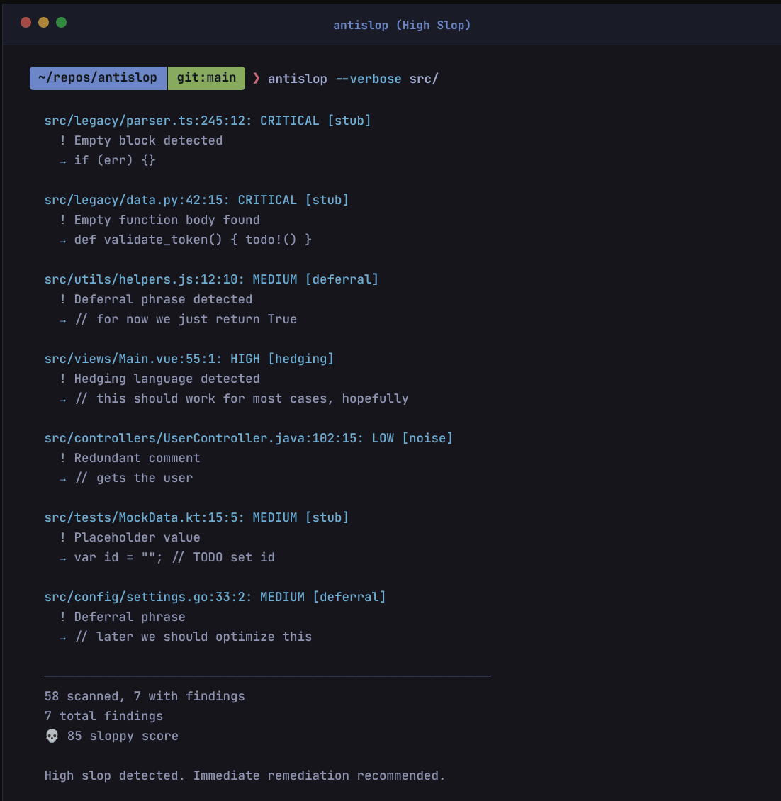

Introduction
AntiSlop is a blazing-fast, multi-language linter for detecting AI-generated code slop.

What is Slop?
Slop is code where the AI model cuts corners to save tokens, reduce inference time, or “just make it compile.” It is not about style or bugs, but about laziness and incompleteness.
AntiSlop detects:
- Placeholders:
TODO,FIXME,HACK(deferring work) - Stubbing: Empty functions,
pass,return null(saving tokens) - Error Suppression:
unwrap(),@ts-ignore,_ = err(avoiding complexity) - Hedging: “hopefully”, “should work” (hallucination uncertainty)
- Deferrals: “for now”, “temporary fix” (intent gap)
Unlike standard linters, AntiSlop focuses specifically on these artifacts of AI generation.
Philosophy
AntiSlop is built on First Principles:
- Code is Liability: Every line of code is a future maintenance cost.
- Intent != Implementation: Comments like
TODOorfor nowsignal a gap between what was intended and what was built. - Speed is a Feature: Verification must be instant to be useful.
We believe that AI generated code should be treated with Zero Trust. Verify everything.
Zero False Positives
AntiSlop follows a Zero False Positive philosophy for its default core.
- Core (Default): Critical stubs & placeholders only. Zero false positives.
- Strict (
--profile antislop-strict): Maximum coverage. Detects all forms of slop.
Comparison
| Feature | AntiSlop | Standard Linters (ESLint/Clippy) | AI Refactors |
|---|---|---|---|
| Focus | Intent & Completeness | Syntax & Best Practices | Improvements |
| Speed | Milliseconds | Seconds/Minutes | Slow |
| Parsing | Hybrid (Regex + AST) | AST Only | AST/LLM |
| Target | AI Slop | Bugs/Style | Refactoring |
| LSP | Yes | Yes | Sometimes |
Pattern Hygiene (Orthogonal)
We follow a Mutually Exclusive, Collectively Exhaustive strategy with standard linters like MegaLinter.
- AntiSlop: Detects AI shortcuts (stubs, hallucinated API usage, hedging).
- Standard Linters: Detect syntax errors, style issues, and bugs.
Rule: If eslint or clippy catches it by default, AntiSlop will not cover it (unless explicitly whitelisted).
Hygiene Survey
AntiSlop includes a hygiene survey feature to audit your project’s tooling.
antislop --hygiene-survey
This command checks for the presence of:
- Linters: ESLint, Ruff, Clippy, Checkstyle, etc.
- Formatters: Prettier, Black, Rustfmt, Gofmt, etc.
- CI/CD: GitHub Actions, GitLab CI, etc.
- Pre-commit Hooks:
pre-commit, Husky.
It provides a report on what is missing for your detected project languages.
Installation
From Pre-built Binaries (Recommended)
# Shell (Linux/macOS)
curl --proto '=https' --tlsv1.2 -LsSf https://github.com/skew202/antislop/releases/latest/download/antislop-installer.sh | sh
# Homebrew
brew install skew202/tap/antislop
# PowerShell (Windows)
powershell -c "irm https://github.com/skew202/antislop/releases/latest/download/antislop-installer.ps1 | iex"
From crates.io
cargo install antislop
From Source
git clone https://github.com/skew202/antislop.git
cd antislop
cargo build --release
The binary will be available at target/release/antislop.
Feature Flags
AntiSlop is modular. Optimize for binary size by choosing specific languages:
# Default (Standard Languages)
cargo install antislop
# Minimal (Regex only, no AST)
cargo install antislop --no-default-features --features parallel
# Specific Languages
cargo install antislop --no-default-features --features python,rust
# All Languages
cargo install antislop --features all-langs
Usage
Basic Usage
# Scan current directory
antislop
# Scan specific paths
antislop src/ tests/
# Scan single file
antislop examples/sloppy.py
Output Formats
# Human-readable (default)
antislop src/
# JSON output
antislop --json src/
# SARIF for GitHub Security
antislop --format sarif > results.sarif
Profiles
AntiSlop follows the Unix philosophy: minimal defaults, extensible via profiles.
By default, only Core patterns (stubs, critical placeholders) are enabled.
For most projects, we recommend the antislop-standard profile.
# Recommended baseline (Standard profile)
antislop --profile antislop-standard src/
# Strict checking (All patterns)
antislop --profile antislop-strict src/
# List available profiles
antislop --list-profiles
Category Control
Fine-tune your scan by enabling/disabling specific pattern categories:
# Disable specific categories
antislop --disable hedging src/
antislop --disable hedging,deferral src/
# Only scan specific categories
antislop --only stub src/
antislop --only stub,placeholder src/
Profile Management
# Load a local profile file
antislop --profile .antislop/profiles/custom.toml src/
# Load a remote profile
antislop --profile https://example.com/profiles/strict.toml src/
Options
| Option | Description |
|---|---|
-c, --config <FILE> | Path to config file |
--profile <NAME> | Load a community profile (file, URL, or name) |
--list-profiles | List available profiles |
--disable <CATS> | Disable categories (comma-separated) |
--only <CATS> | Only enable categories (comma-separated) |
--hygiene-survey | Run code hygiene survey (detect linters, formatters, CI/CD) |
--json | Output in JSON format |
--format <FMT> | Output format: text, json, sarif |
-m, --max-size <KB> | Maximum file size to scan (default: 1024) |
-e, --extensions <EXT> | File extensions to scan (comma-separated) |
-v, --verbose | Verbose output (use -vv, -vvv for more) |
--completions <SHELL> | Generate shell completions |
--list-languages | List supported languages |
--print-config | Print default configuration |
--no-filename-check | Disable filename convention checking |
Hygiene Survey
Run a comprehensive code hygiene survey to discover project setup and tooling:
antislop --hygiene-survey
The survey detects:
- Project types (Rust, Python, JavaScript, TypeScript, Go, Java, etc.)
- Linters & Formatters (clippy, rustfmt, ESLint, Prettier, Ruff, etc.)
- CI/CD Pipelines (GitHub Actions, GitLab CI, Jenkins, CircleCI)
- Pre-commit hooks (pre-commit, husky, lefthook)
It provides recommendations for missing tools based on your project type.
Examples
JSON Output
antislop --json src/ > results.json
SARIF for GitHub Security
antislop --format sarif > results.sarif
Custom Extensions
antislop -e .py,.rs,.js src/
Verbose Mode
antislop -vv src/
Shell Completions
# For bash
antislop --completions bash > ~/.local/share/bash-completion/completions/antislop
# For zsh
antislop --completions zsh > ~/.zfunc/_antislop
# For fish
antislop --completions fish > ~/.config/fish/completions/antislop.fish
Exit Codes
| Code | Meaning |
|---|---|
0 | No slop detected |
1 | Slop found |
2 | Error (config, file access, etc.) |
Integration
Pre-commit Hook
Add to .pre-commit-config.yaml:
repos:
- repo: https://github.com/skew202/antislop
rev: v0.1.0
hooks:
- id: antislop
GitHub Action
- uses: skew202/antislop@v1
with:
args: src/
Configuration
AntiSlop uses layered configuration: built-in defaults → config file → CLI flags.
Config File Locations
AntiSlop searches for configuration in this order:
--config <FILE>if providedantislop.toml.antislop.toml.antislop
Config File Format
# File extensions to scan
file_extensions = [".py", ".rs", ".js", ".ts"]
# Maximum file size in KB
max_file_size_kb = 1024
# Paths to exclude (glob patterns)
exclude = [
"node_modules/**",
"target/**",
"venv/**",
]
# Detection patterns
[[patterns]]
regex = "(?i)TODO:"
severity = "medium"
message = "Placeholder comment: untracked TODO found"
category = "placeholder"
[[patterns]]
regex = "(?i)for now"
severity = "low"
message = "Deferral: temporary solution with no plan to revisit"
category = "deferral"
Pattern Options
| Field | Type | Description |
|---|---|---|
regex | string | Regular expression to match (use (?i) for case-insensitive) |
severity | string | One of: low, medium, high, critical |
message | string | Human-readable description |
category | string | One of: placeholder, deferral, hedging, stub |
Severity Scores
| Severity | Score |
|---|---|
| low | 1 |
| medium | 5 |
| high | 15 |
| critical | 50 |
Community Profiles
Profiles are reusable pattern collections stored in .antislop/profiles/.
Profile Locations
AntiSlop searches for profiles in:
.antislop/profiles/<name>.toml(project-local)~/.config/antislop/profiles/<name>.toml(user)~/.cache/antislop/profiles/<name>.toml(cached remote)
Built-in Profiles
| Profile | Description |
|---|---|
antislop-standard | Language-agnostic base config (recommended) |
no-stubs | Strict anti-stub patterns |
strict-comments | No deferral language allowed |
Profile Format
[metadata]
name = "my-profile"
version = "1.0.0"
description = "My custom patterns"
extends = ["antislop-standard"] # Optional: inherit from other profiles
[[patterns]]
regex = '(?i)my pattern'
severity = "medium"
message = "Description"
category = "deferral"
Using Profiles
# Load by name
antislop --profile antislop-standard src/
# Load from file
antislop --profile ./my-profile.toml src/
# Load from URL (cached for 24h)
antislop --profile https://example.com/profile.toml src/
Patterns
AntiSlop detects four categories of slop patterns.
Placeholder
Untracked placeholders that indicate incomplete work:
TODO:- Untracked TODO commentFIXME:- Indicates incomplete workHACK:- Poor solution that needs revisitingNOTE: important- Unnecessary NOTE commentsXXX- Urgent problems
Deferral
Language indicating temporary solutions:
for now- Temporary solution with no plan to revisittemp,temporary- Temporary code that becomes permanentquick implement- Euphemism for incompletesimplif- Often skips edge casesshortcut- Creates technical debtin production this would- Indicates prototype codethis should be- Indicates incomplete implementationthis would be- Defers proper implementation
Hedging
Uncertainty language in comments:
hopefully- Uncertainty about code behaviorshould work- Unsure if code actually worksapproximately,roughly- Code should be precisethis is a simple- Often means missing edge casesbasic implement- Incomplete implementation warningin a real world- Code that would be different in production
Stub
Empty or placeholder implementations:
MOCK- Mock implementation in production codeFAKE- Fake data or implementationDUMMY- Dummy value or placeholderSIMULATED- Simulated result for testingplaceholder,stub- Instead of actual implementationnot implemented,unimplemented- Explicitly unimplemented codehardcoded path- Hardcoded file paths or URLsmagic number- Unt constants without explanation
Adding Custom Patterns
Add to your antislop.toml:
[[patterns]]
regex = "(?i)your-pattern-here"
severity = "medium"
message = "Your custom message"
category = "placeholder"
Performance
AntiSlop uses tree-sitter AST parsing for accurate detection. Regex-only mode is ~10x faster.
| Language | Mode | Time | Throughput |
|---|---|---|---|
| Python | AST | 3.89 ms | 392 KiB/s |
| JavaScript | AST | 1.72 ms | 776 KiB/s |
| TypeScript | AST | 4.96 ms | 378 KiB/s |
| Go | AST | 1.28 ms | 1.25 MiB/s |
| Rust | AST | 3.33 ms | 606 KiB/s |
| Python | Regex | 385 µs | — |
| Rust | Regex | 384 µs | — |
Scaling:
| Lines | Time | throughput |
|---|---|---|
| 10,000 | 75.6 ms | 1.9 MiB/s |
| 50,000 | 382 ms | 1.9 MiB/s |
Benchmarks run on standard laptop hardware (Linux x86_64). Run cargo bench to reproduce.
Architecture
Overview
AntiSlop is built as a library with a CLI binary, enabling programmatic use and extensibility.
graph TD
CLI[CLI Args & Output] --> Lib[AntiSlop Library]
Lib --> Config[Configuration]
Lib --> Walker[Walker]
Lib --> Scanner[Scanner]
Lib --> Reporter[Reporter]
Scanner --> Detector[Detector Module]
subgraph Detector Module
TS[Tree-sitter]
Regex[Regex Fallback]
end
Detector --> TS
Detector --> Regex
Modules
walker
Parallel file traversal with gitignore support using the ignore crate.
detector
Core detection engine with:
- Pattern registry and compilation
- Tree-sitter integration for accurate comment extraction (15+ languages)
- AST-level slop detection via tree-sitter queries
- Regex fallback for languages without tree-sitter support
- Language detection from file extensions
config
Configuration management with TOML support and layered defaults.
report
Output formatting with human-readable colored terminal output, JSON export, and SARIF for GitHub Security.
Quality Assurance Strategy
AntiSlop uses an Orthogonal Strategy with tools like MegaLinter.
- Hygiene Test:
scripts/check_overlap.pyensures no pattern overlaps with standard linter defaults. - Goal: AntiSlop only flags “AI Slop” (intent/laziness), leaving syntax/style to specialized tools.
Language Support
| Language | Tree-sitter | Regex Fallback | Feature Flag |
|---|---|---|---|
| C/C++ | ✓ | ✓ | cpp |
| C# | ✓ | ✓ | c-sharp |
| Go | ✓ | ✓ | go |
| Haskell | ✓ | ✓ | haskell |
| Java | ✓ | ✓ | java |
| JavaScript | ✓ | ✓ | javascript |
| JSX | ✓ | ✓ | javascript |
| Kotlin | ✓ | ✓ | kotlin |
| Lua | ✓ | ✓ | lua |
| Perl | ✗ | ✓ | — |
| PHP | ✓ | ✓ | php |
| Python | ✓ | ✓ | python |
| R | ✗ | ✓ | — |
| Ruby | ✓ | ✓ | ruby |
| Rust | ✓ | ✓ | rust |
| Scala | ✓ | ✓ | scala |
| Shell (bash/sh/zsh/fish) | ✗ | ✓ | — |
| Swift | ✗ | ✓ | — |
| TypeScript | ✓ | ✓ | typescript |
| TSX | ✓ | ✓ | typescript |
Contributing
We welcome contributions! This page summarizes key info, see the full CONTRIBUTING.md for complete details.
Development Setup
git clone https://github.com/skew202/antislop.git
cd antislop
# Install Rust if needed
curl --proto '=https' --tlsv1.2 -sSf https://sh.rustup.rs | sh
# Build and test
cargo build --release
cargo test --all-features
# Lint
cargo clippy --all-features -- -D warnings
cargo fmt
Quality Requirements
All contributions must pass:
| Check | Command |
|---|---|
| Format | cargo fmt --check |
| Clippy | cargo clippy -- -D warnings |
| Tests | cargo test --all-features |
| Docs | cargo doc --no-deps |
See QA_STRATEGY.md for complete QA approach.
Running Tests
# All tests (99 total)
cargo test --all
# Unit tests only (51 tests)
cargo test --lib
# Integration tests (19 tests)
cargo test --test integration_tests
# Property-based tests (5 tests)
cargo test --test property_tests
# Snapshot tests (5 tests)
cargo test --test snapshot_tests
# Edge case tests (9 tests)
cargo test --test edge_cases
# CLI output tests (9 tests)
cargo test --test cli_output_tests
# Update snapshots
cargo insta review
Code Style
- Follow
rustfmtformatting - No clippy warnings allowed
- Document all public APIs with
///docs - Write tests for new functionality
- Add property tests for edge cases
Adding Languages
- Add
Languagevariant insrc/detector/mod.rs - Add tree-sitter dependency in
Cargo.toml(optional) - Implement extractor in
src/detector/tree_sitter.rs - Add tests for the new language
- Update
docs/architecture.mdlanguage table
Adding Patterns
- Check Pattern Hygiene: Run
python3 scripts/check_overlap.py. We follow an orthogonal strategy with standard linters. - Update Config: Edit files in
config/patterns/with your pattern definition:
[[patterns]]
regex = "(?i)your_pattern"
severity = "medium"
message = "Description of what was found"
category = "placeholder" # or deferral, hedging, stub